|
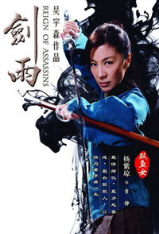
杨紫琼 饰 曾静
侠骨柔情，实在不适合进入武林之中。性情温和，优柔寡断。由于知道武功是用来伤人的，出手时恍如千斤重，偏偏感情世界一波三折，为情苦恼，无奈之下，酿下江湖上的悲剧。
武器：辟水剑是一柄软剑，可以在内力运用下瞬间转弯，从各个意想不到的角度攻击敌人，使用时好像雨雪纷飞，只看到形象但听不到声音时已经杀了一个人。
导演点评： "辟水剑法"，剑招又快又密，剑路之走势如风中的细雨飘忽不定，令人难以捉摸。
侠骨柔情，实在不适合进入武林之中。性情温和，优柔寡断。由于知道武功是用来伤人的，出手时恍如千斤重，偏偏感情世界一波三折，为情苦恼，无奈之下，酿下江湖上的悲剧。
武器：辟水剑是一柄软剑，可以在内力运用下瞬间转弯，从各个意想不到的角度攻击敌人，使用时好像雨雪纷飞，只看到形象但听不到声音时已经杀了一个人。
导演点评： "辟水剑法"，剑招又快又密，剑路之走势如风中的细雨飘忽不定，令人难以捉摸。
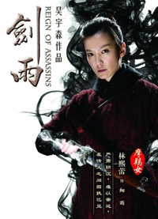
林熙蕾 饰 细雨
整容之前的曾静
严肃而略显阴沉，令人难易接近，但有主义思想有抱负，有极深的智慧，武功毫不放松。在情和义的问题上钻了牛角尖，导致了一个剑雨江湖的悲剧。
整容之前的曾静
严肃而略显阴沉，令人难易接近，但有主义思想有抱负，有极深的智慧，武功毫不放松。在情和义的问题上钻了牛角尖，导致了一个剑雨江湖的悲剧。
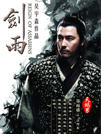
郑雨盛 饰 江阿生
神秘果决，善于保护自己，敢爱敢恨，性格强烈，自尊心强，勇于迎接艰难险阻并征服之，但表面冷漠却信心狂热，沉静的旁观分子。
只喜冷眼旁观，不喜伸出援手的态度，只有一生中仅有的情能决定他的正邪评价。平常对世事冷冷淡淡，独来独往，不轻易出手，高深莫测。
神秘果决，善于保护自己，敢爱敢恨，性格强烈，自尊心强，勇于迎接艰难险阻并征服之，但表面冷漠却信心狂热，沉静的旁观分子。
只喜冷眼旁观，不喜伸出援手的态度，只有一生中仅有的情能决定他的正邪评价。平常对世事冷冷淡淡，独来独往，不轻易出手，高深莫测。
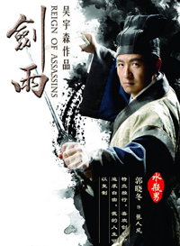
郭晓冬 饰 张人凤
整容之前的张阿生
特立独行，喜欢创新，最求自由，但人在江湖，只能选择做一个命运带着走的侠者，最终只能以复制人生再现江湖。
武器：一手长剑，一手短剑，一黑一白，一攻上，一攻下，取"参差不齐"之意。似真似假、参差不齐。
导演点评：参差剑并不是随便某个人都可以使用，必须要有独特的身体构造才能运用自如。
整容之前的张阿生
特立独行，喜欢创新，最求自由，但人在江湖，只能选择做一个命运带着走的侠者，最终只能以复制人生再现江湖。
武器：一手长剑，一手短剑，一黑一白，一攻上，一攻下，取"参差不齐"之意。似真似假、参差不齐。
导演点评：参差剑并不是随便某个人都可以使用，必须要有独特的身体构造才能运用自如。
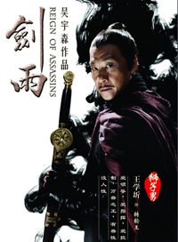
王学圻 饰 转轮王
蕴含力量，炯然有神，坚韧不拔的神情，庄重而高贵的态度，俨然有王者之风，给人有震撼之力，纵横千里，天下岂有不服我者焉？放眼江湖，能扛起重任的人非我莫属。想统一江湖，译破天下。遗憾的是由于过于自大，总看不清楚江湖形势，难以实现自己的愿望。
武器："转轮剑"上有一小转轮，当以内力运剑时，会轰隆作响；转轮王的称号来自阎罗地狱第十殿的审判官。
导演点评：转轮剑其形似剑，力道之重确有若刀劈。此外"细雨"与"绽青"的辟水剑法，也是由转轮王所传授。
蕴含力量，炯然有神，坚韧不拔的神情，庄重而高贵的态度，俨然有王者之风，给人有震撼之力，纵横千里，天下岂有不服我者焉？放眼江湖，能扛起重任的人非我莫属。想统一江湖，译破天下。遗憾的是由于过于自大，总看不清楚江湖形势，难以实现自己的愿望。
武器："转轮剑"上有一小转轮，当以内力运剑时，会轰隆作响；转轮王的称号来自阎罗地狱第十殿的审判官。
导演点评：转轮剑其形似剑，力道之重确有若刀劈。此外"细雨"与"绽青"的辟水剑法，也是由转轮王所传授。
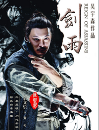
余文乐 饰 雷彬
天性敏感，体贴，有同情心，超级自虐走江湖，常常很受伤，同时也会为了家里事，为求得家人多一点关怀，多一点怜悯，没自信需要靠别人的一点点认同度日，过于心软。他救死扶伤的灵药就是温柔，武功再强但自卑又自怜，可怜之人必有可恨之处。
武器：各式各样，长短不一的钢针，从细如牛毛的绣花针，到长逾尺有如判官笔的钢刺。
导演点评：绰号"神针"，黑石三大杀手之一，尽管杀人只是养家糊口的工作，也依然敬职敬业。
天性敏感，体贴，有同情心，超级自虐走江湖，常常很受伤，同时也会为了家里事，为求得家人多一点关怀，多一点怜悯，没自信需要靠别人的一点点认同度日，过于心软。他救死扶伤的灵药就是温柔，武功再强但自卑又自怜，可怜之人必有可恨之处。
武器：各式各样，长短不一的钢针，从细如牛毛的绣花针，到长逾尺有如判官笔的钢刺。
导演点评：绰号"神针"，黑石三大杀手之一，尽管杀人只是养家糊口的工作，也依然敬职敬业。
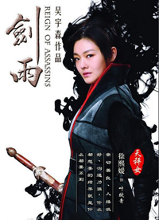
徐熙媛 饰 叶绽青
五官精致，目光柔和软绵绵，猜不透是正是邪，不理世俗正义一套，只望达到平静和安详的平衡境界，自己却不能仅享受人生，出手时要让对方连被杀都感到很平衡。但凡是讲究平衡变成没重点，什么都想要的结果就是什么都要不到。
武器：绽青剑，杀人利器，运剑如斫。
导演点评：最适合使用"辟水剑法"的武器还是"辟水剑"，一天不夺回细雨手上的辟水剑，绽青就只能做一天影子。
五官精致，目光柔和软绵绵，猜不透是正是邪，不理世俗正义一套，只望达到平静和安详的平衡境界，自己却不能仅享受人生，出手时要让对方连被杀都感到很平衡。但凡是讲究平衡变成没重点，什么都想要的结果就是什么都要不到。
武器：绽青剑，杀人利器，运剑如斫。
导演点评：最适合使用"辟水剑法"的武器还是"辟水剑"，一天不夺回细雨手上的辟水剑，绽青就只能做一天影子。
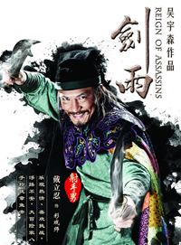
戴立忍 饰 彩戏师
思想兼容并蓄，爱剖析到底，做事瞻前不顾后，说话有口无心，来无影去无踪，永远看不见自己的缺点，当眼中有一个目标的时候，世界就只剩下那个目标，万物按感觉不到周遭到底发生了什么，天塌下来也与我无关。
武器：运用通天绳，可以使出江湖里奇幻的武功"神仙索"，一根可以直通云霄的绳索，将使用者快速带到任何地方的同时也能让敌人身首异处。
导演点评：年近六十的连绳，平日的身份是一个旅行各地表演魔术的"彩戏师"，动手时将魔术与兵器混合使用，独树一格。由于喜欢杯中物，身上长有常年不愈的烂疮，身为病痛所苦。
思想兼容并蓄，爱剖析到底，做事瞻前不顾后，说话有口无心，来无影去无踪，永远看不见自己的缺点，当眼中有一个目标的时候，世界就只剩下那个目标，万物按感觉不到周遭到底发生了什么，天塌下来也与我无关。
武器：运用通天绳，可以使出江湖里奇幻的武功"神仙索"，一根可以直通云霄的绳索，将使用者快速带到任何地方的同时也能让敌人身首异处。
导演点评：年近六十的连绳，平日的身份是一个旅行各地表演魔术的"彩戏师"，动手时将魔术与兵器混合使用，独树一格。由于喜欢杯中物，身上长有常年不愈的烂疮，身为病痛所苦。
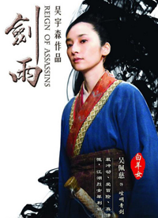
吴佩慈 饰 崆垌青剑
精力旺盛，行动能力很强，性格火爆，爱恨分明，但可不见得是善恶分明。因此即使武功不错，只能处于不高不低的地位，犯下毁天灭地的大错，自以为背负着全江湖人的不谅解。
精力旺盛，行动能力很强，性格火爆，爱恨分明，但可不见得是善恶分明。因此即使武功不错，只能处于不高不低的地位，犯下毁天灭地的大错，自以为背负着全江湖人的不谅解。
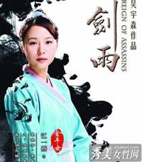
江一燕 饰 田青彤
世故而稳重，性格有耐性持久，但凡是不看、不听、不用心感受，只利用自己经验值做判断，结果就是让爱你的人伤心，还依然故我。
世故而稳重，性格有耐性持久，但凡是不看、不听、不用心感受，只利用自己经验值做判断，结果就是让爱你的人伤心，还依然故我。
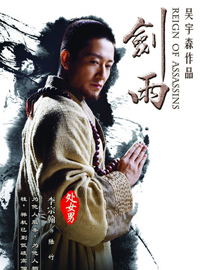
李宗翰 饰 陆竹
饱读经书，学问渊博悟性高，刻意压制自己的冲动与激情，甘愿牺牲。江湖事都忧心忡忡，强迫自己不要管闲事。抱独善其身的态度，但人在江湖，身不由己，愿化身石桥，受五百年日晒，五百年风吹，五百年雨打，能舍小我成全大我。
饱读经书，学问渊博悟性高，刻意压制自己的冲动与激情，甘愿牺牲。江湖事都忧心忡忡，强迫自己不要管闲事。抱独善其身的态度，但人在江湖，身不由己，愿化身石桥，受五百年日晒，五百年风吹，五百年雨打，能舍小我成全大我。
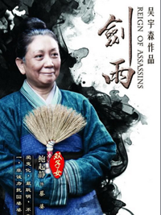
鲍起静 饰 蔡婆
充满智慧而令人觉得生动有活力，生性聪明善变懂得利用环境，喜欢热闹最爱道听途说，拿别人的智慧，当做自己的威风。博而不精，样样浅学，见风转舵，最爱牵线人家感情当人情。
充满智慧而令人觉得生动有活力，生性聪明善变懂得利用环境，喜欢热闹最爱道听途说，拿别人的智慧，当做自己的威风。博而不精，样样浅学，见风转舵，最爱牵线人家感情当人情。
度娘 版权所有 ©